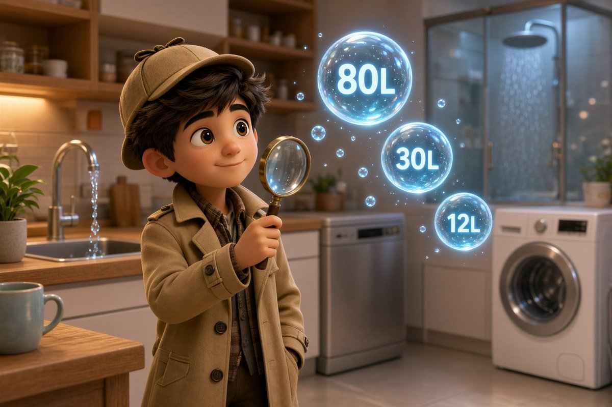

Дело об
утекающей воде
Ты — младший детектив. Счётчик в доме крутится слишком быстро. На фото — юный сыщик на кухне, а в воздухе светятся пузыри 80L, 30L и 12L. Нужно послушать запись из учебника и понять, куда уходит вода.
Цель урока: научиться слышать точные цифры (litres) и сравнивать расход воды, а также собирать научные факты по формуле Zero Conditional: If / When + Present Simple, Present Simple + because…
Прогресс сохраняется на этом устройстве. Все части урока открыты сразу. Нажми 🔊 на карточке, чтобы услышать слово.

Слова-улики
Нажми карточку, чтобы перевернуть её и услышать английское слово. Это флип-карточки: слово с одной стороны, перевод и пример — с другой.
0 / 8
Нажми на светящиеся пузыри
Сначала просто рассмотри цифры. Подписи «ванна / душ / посудомойка» появятся в подсказке. Точный смысл каждой цифры проверь после аудио: на картинке пузыри парят не строго над своими приборами.
⛵ Почему она утонула? — секретный отчёт
В лаборатории нашли запись про лодку, но половина текста стёрта. Выбери правильное окончание и причину с because. Правило: If / When + Present Simple, Present Simple + because…
If / When
условие в Present Simple
Present Simple
результат, который бывает всегда
because
heavy, light, full of air, dense
0 / 7
Свои 2 факта по формуле
Напиши два своих предложения про предметы дома (карандаш, монета, бумажный кораблик, лёд…). Используй If или When и because. Это твои слова, не готовые фразы из задания выше.
0 / 2
🎙️ Запись из учебника: куда утекает вода?
Послушай настоящую запись (около 2 минут). В ней два человека говорят о расходе воды дома. Вытащи точные цифры и будь внимателен: иногда это диапазон, не одно число (например, 30 to 34 litres).
Evidence tape #0906 — Water audit
Announcer: Track 3.16. Unit 9, Lesson 6, Activities 2 and 3.
A: Did you know that a person uses between 100 and 135 litres of water every day?
B: Really?
A: Just washing your hands uses between 4 and 6 litres of water.
B: 4 to 6 litres every time you wash your hands!
A: Yes, that's right!
B: So how much water does having a bath use?
A: A bath uses more water than a shower. If you fill the bath, it uses about 80 litres of water.
B: 80 litres? That's a lot!
A: Yes it is!
B: And what about a shower?
A: A 5-minute shower only uses about 30 to 34 litres.
B: Okay, so we save water when we have a shower. We use a lot of water in the kitchen too. Which uses more water, washing up by hand or using a dishwasher?
A: Guess!
B: A dishwasher?
A: Wrong! Washing up by hand uses more water.
B: Really?
A: Yes, a dishwasher uses only just over 10 litres of water.
B: So, about 12 litres or 14 litres?
A: Yes, that's right!
B: And what about a washing machine?
A: Ah, a washing machine uses a lot more water than a dishwasher. Between 60 and 80 litres.
B: 60 to 80 litres? That's a lot! And we turn it on every day!
Проверка показаний: True или False
Отвечай только по записи, не по догадке. Можно переслушать фрагмент.
0 / 8
🔢 Расшифруй пузыри и цифры из записи
Важно про картинку. На фото пузырь 80L парит ближе к душу, а 12L — ближе к стиральной машине. Но в записи 80 литров — это полная ванна, 30–34 литра — пятиминутный душ, 12–14 литров — посудомойка, а стиральная машина тратит 60–80 литров. Для ответов верь записи, не месту пузыря.
0 / 8
⚖️ Кто тратит больше, а кто меньше?
Собери предложение: выбери MORE или LESS и нужную цифру из записи, затем нажми «Проверить».
0 / 4
📝 Исправь ошибки в записях
В блокноте испорчены и грамматика, и факты. Выбери правильное предложение. Варианты перемешаны.
0 / 7
🗣️ Допрос свидетеля: сколько воды ты потратил вчера?
Теперь детектив допрашивает тебя. Напиши свои предложения по-английски — не копируй готовые фразы из ключей. Нужно не меньше 5 слов в ответе. Кнопкой 🔊 можно прослушать вопрос (en-GB).
0 / 8
📋 Финальный рапорт
Certificate of Junior Detective
This certifies that Junior Detective closed the case of the leaking water.
Улики: 0 / 8 • bath 80L • shower 30–34L • dishwasher 12–14L • washing machine 60–80L
Код урока:
WATER-U9L6-TAPE
Рефлексия
Что теперь умеешь лучше: слышать цифры, сравнивать more / less или собирать предложения с If / When и because?
Теперь ты умеешь не гадать по картинке, а опираться на запись и проверять цифры — именно это нужно в заданиях на аудирование.
🏠 Homework mission
Do this after the lesson. Write your own ideas. Do not copy the class sentences.
Part 1. Water at home (6–8 sentences)
Write 6–8 sentences about how you and your family use water at home, and how you can save water. Use litres if you can.
0 words
Part 2. Two Zero Conditionals
Write two new sentences about things at home (ice, a spoon, soap, a sponge). Use If or When and because. Do not use the boat, the marble or the feather from class.
Part 3. A short report for the chief
Write a short message: which things at home use a lot of water, and why it is important to save water. This is a report, not a list of True / False answers.